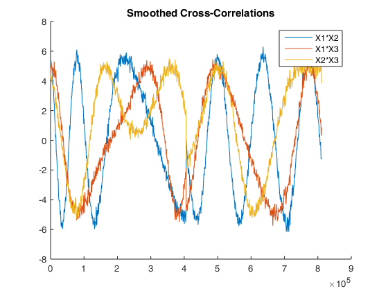
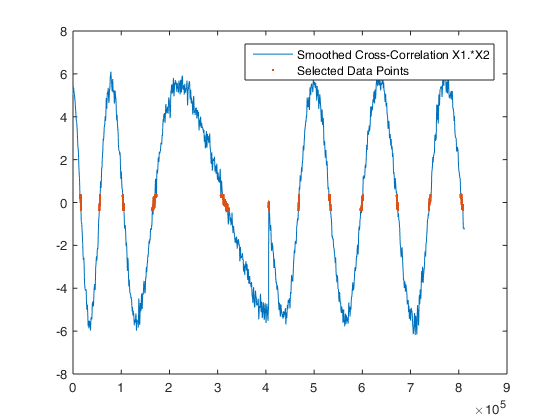
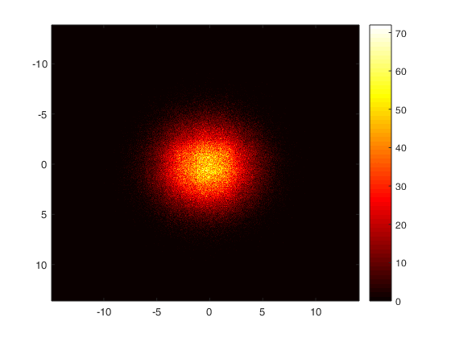
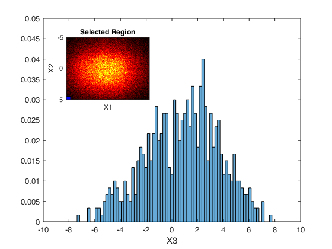

How to analyse a 3-Channel dataset
Data from a 3-Channel homodyne quantum state measurement has its own functions for evaluation which will be presented here.
Contents
Loading a single data-file
For each dataset you need to specify two files: The file filenameSIG where you recorded an actual signal, and the file filenameLO where you recorded the vacuum. The vacuum signal is used to normalize the computed quadratures. Otherwise you would not be able to calculate photon numbers later on. X1, X2 and X3 are the calculated quadratures for the corresponding channels with their offset already subtracted.
[X1,X2,X3] = prepare3ChData(filenameLO, filenameSIG);
14:44:05 Load LO data 14:44:05 Load Signal data 14:44:36 Computing number of LO photons for Channel 1 14:44:38 Computing quadratures for target quantum state for Channel 1 14:45:29 Removing piecewise offset ... 14:45:29 Reshaping into piezo segments ... 14:45:31 Computing number of LO photons for Channel 2 14:45:32 Computing quadratures for target quantum state for Channel 2 14:46:19 Removing piecewise offset ... 14:46:20 Reshaping into piezo segments ... 14:46:21 Computing number of LO photons for Channel 3 14:46:22 Computing quadratures for target quantum state for Channel 3 14:47:10 Removing piecewise offset ... 14:47:10 Reshaping into piezo segments ...
Plotting Cross-Correlations
For a first overview of your dataset it can be helpful to plot the 3 possible cross-correlations between the channels. The following cross-correlations originate from a thermal light measurement. Therefore, the cross-correlations are the only way to see wether there is a defined phase between your channels or not. Per default, the plot is limited to two consecutive piezo segments.
plotCrossCorrelation(X1,X2,X3);
The previous plotting function makes use of the function
ys = smoothCrossCorr(Xa,Xb,varargin)
which generates a smoothed version of the vector
Xa.*Xb
with the help of cubic smoothing splines.
Select datapoints where two channels are orthogonal
To reconstruct the phase between the signal field and our local oscillator, we need to work only on data points, where two homodyne channels are orthogonal to each other. At these points, the cross-correlation of the two channels is on average zero. The following function selects such triples (O1,O2,O3) from (X1,X2,X3), where X1 and X2 are orthogonal.
[O1,O2,O3] = selectOrthogonal(X1,X2,X3,'plot');
 The default setting selects a range of 5% (Max-Min) around zero. However, you can choose your own range by specifying the ORTH_WIDTH parameter:
selectOrthogonal(X1,X2,X3,'noplot',ORTH_WIDTH)
2D Histogram
It is sometimes useful to calculate and visualize a two dimensional histogram of quadrature data. For example of O1 and O2 from the previous function outputs. The amplitudes of these orthogonal channels give a point in a phasor diagram and therefore a phase.
[H, binsO1, binsO2] = histogram2D(O1,O2,'plot');
 Visualizing the selection process with a Movie
Next, we select from the orthogonally pre-selected dataset (O1,O2,O3) only such points, that lie in a specific region of the previously plotted histogram. If we plot a histogram of such data for the third channel, O3, this should result in a phase-averaged coherent state, when the original measurement was performed on a thermal state. The following function does this selection and plotting for many different regions and saves the results to a Movie. The input variable theta is empty for now.
theta = sparse(zeros(size(O1)));
plot3ChMovie(O1,O2,O3,theta,'nomovie');
 The optional paramter 'nomovie' prevents the creation of the movie. The blue region in the inset illustrates the selected region. And the main plot shows the corresponding histogram of the selected O3-values.
Helper functions
Selectiing a specific region in a given orthogonal 3-Channel dataset. X consists of the selected O3 values.
[X,theta] = selectRegion(O1,O2,O3,theta,varargin)
If the data in A only exhibits a certain number of different values (e.g. 8-bit, ...), you can get the minimum number nbins of bins bins.
[bins, nBins] = minBins(A)